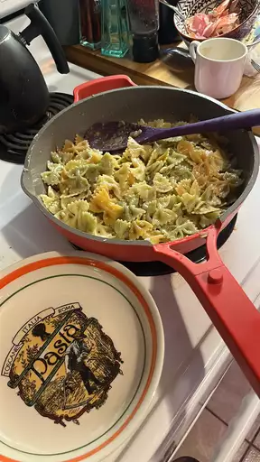

Pesto Pasta

How to make pesto pasta
This top-rated pesto pasta recipe, which comes together in just 15 minutes, is the perfect quick and easy
weeknight dinner
You'll find a detailed ingredient list and step-by-step instructions in the recipe below, but let's go over the
basics:
Ingredients
- Pasta
- Onion and oil
- Pesto
- Seasonings
- Cheese
Steps
- Boil the pasta in salted water and drain.
- Cook the onion in oil, then stir in the pesto and seasonings.
- Add the pesto mixture to the hot pasta and toss with cheese.